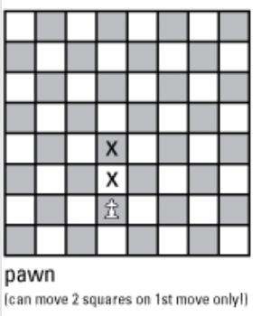
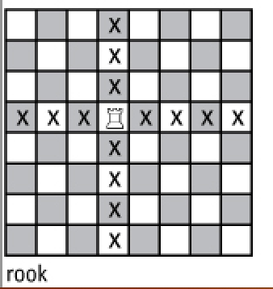
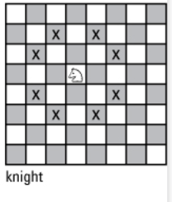
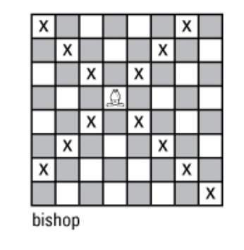
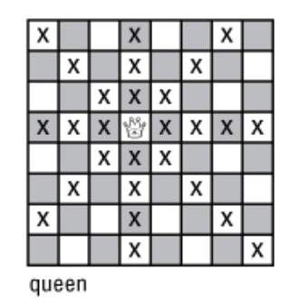
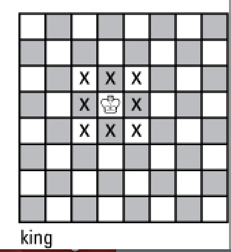

Pawns move forwards one square at a time. They can move forward two if they have not yet moved. They can capture one unit forwards diagonally. Pawns (as used by a strong player) are often seen as one cohesive structure, rather than a lot of individual pieces of small value. When developing, one pawn being one square to the diagonal right or left of another means that it is protected and acts as a wall against other pieces. This means the worst use of pawns is to isolate them. For instance, if you have a D pawn, then lose the C and E pawns, you no longer have any structure. Any threats to that pawn must be addressed with other pieces of higher value, oftentimes at a tactical disadvantage.
Rooks can move on any square horizontally or vertically. They are oftentime the least developed pieces. This means that while they are the second most valueable in terms of tactics, a board in which one hasnt castled or opened up the pawn structure means that you are restricted a lot of material until the end game. If one side is quick and plans a direct attack on the other's king, their tactic may be bolstered by the fact that much of the material is underdeveloped.
Knights move in an L shape going two squares vertically or horizontally, then one unit to either side. They are unique in that knights are the only piece where one can jump over others in order to move. This is clear in the opening, where oftentimes NC3 or NF6 are common, and therefore the knight is required to hop over a pawn. They are most tactically useful in a closed opening, as they have the ability to attack more when pawns lock up rows and diagonals. However, as the game opens up, they become more and more innefficient as it could take 3-4 moves just to get across the board.
Bishops move similar to rooks, but diagonally. They can't switch squares, meaning a bishop that starts on a white square will never access a black one. Bishops are only useful when the player gives them open diagonals. Leaving a bishop in it's starting square, or worse, block it's color (black for black squared bishop, same for whites) with pawns will completely destroy the value of the piece. In contrast to the knight, bishops become more and more valuable as the game opens up, as less pawns make the board more accessible.
Queens can move as either a bishop or rook. They are the most valueable piece in the game, as they manage to do everything a piece can do besides a knight. However, it is important to not use it too agressively. Openings like the scholars mate are too recognizable, to the point where there is no real advantage in agressively developing the queen. As such, unless you decide to do an early game queen trade, which often do not happen, it makes sense to apply the queen once you have approached a position in which other pieces need assistance.
Kings can move one square in any direction. They can not move to a square that is attacked by a piece from the other side. They should be castled early into the game, and be protected by a row of pawns. A king in the center of the board or in a corner with bad pawn structure can lead to an early end to the game.
Most general tactics and basic movements are hard to learn by reading, and just like language, it is oftentimes most logical to learn to play by playing. Chess has been so democratized that anyone can play against someone their level, and there really isn't an excuse to not start
here is a site to continue learning game mechanics